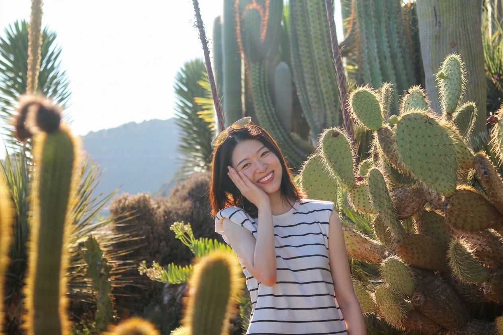

Xinhui Ye
The Story
The Story
So Far
I'm a design researcher, educator and maker. I recently completed my PhD at Eindhoven University of Technology (TU/e), studying how designers explore ideas together when they collaborate remotely. My work sits at the intersection of HCI, design theory and design methods — but I'm just as at home teaching kids to code, painting, or playing the accordion.

Recent
This year, she graduated. She successfully defended her doctoral thesis at Eindhoven University of Technology (TU/e), and with the approval of a committee drawn from universities across the world, she earned the title of doctor.
Her thesis, Co-Exploration in Remote Design Collaboration, asks how designers explore ideas together when working apart. She designed the book cover and wrote all of its content and illustration herself, weaving together the peer-reviewed papers she published during her PhD across venues including IEEE Pervasive Computing, She Ji and the IFIP INTERACT conference.
She now teaches at SALTO international school, running after-school courses for K-12 students. She is in charge of two courses: Co-creativity, and Coding with Robotics — introducing children to hands-on STEM through Edublock, Edison robots and basic coding logic, and making ideas like loops and sequences playful and accessible.
During her spare time, she's exploring AI-driven tools for design work, as well as picking up her old favorite hobby: painting.

Education
PhD in Industrial Design, Eindhoven University of Technology (TU/e), the Netherlands · 2019–2025.
Thesis: Co-Exploration in Remote Design Collaboration, on how designers explore ideas together when working remotely. Supervised by Joep Frens and Jun Hu.
Master in Strategic Design, Hochschule für Gestaltung Schwäbisch Gmünd, Germany — graduated 2016–2018 with sehr gut, the highest grade, in a programme taught entirely in German.
Bachelor in Industrial Design, Beijing Institute of Technology, China · 2011–2015 — where my path into design began.
Work
Coding & Robot Instructor (2026–present). I teach primary-school children hands-on STEM through Edublock, Edison robots and basic coding logic, making concepts like loops and sequences fun and accessible through play.
Coach, Qualitative Research Methods (2020–2023). I designed and delivered a structured learning trajectory for students across academic levels — with clear learning objectives and hands-on exercises — taking them from scoping through fieldwork and lab work to final presentation.
Volunteer tutor of 3D modelling. I helped students get comfortable with modelling tools and turn early ideas into tangible prototypes.
Vice Leader, Baidi Accordion Orchestra (2011–2015). I led ensemble rehearsals and coordinated team activities, and took part in the professional recording of two CDs — West Side Story and Emotion and Fantasize.